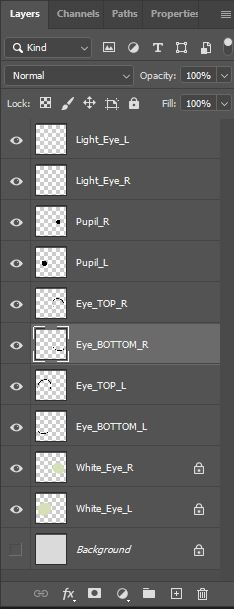
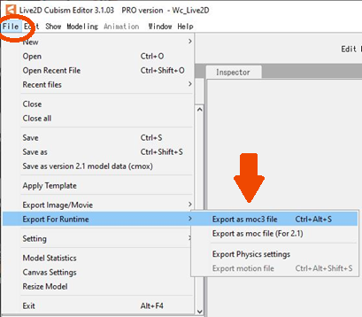
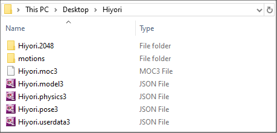

あなた自身の2Dアバターを作成
あなた自身の2Dアバターを作成するには、Live2D Cubism Editorが必要です。Live2D Cubism Editorは、こちらから無料でダウンロードすることができます。Live2Dは、エディターをインストールした全員を対象として、プロバージョンの42日間無料トライアルを提供しています。42日が経過すると、アップグレードしない限り、プロバージョンが自動的に無料バージョンに切り替わります（アップグレードする際には、クレジットカードの情報を入力する必要があります）。
Live2Dは外部パートナーです。同社のソフトウェアと製品の詳細についてはこちらを、基本ライセンスとプロライセンスの違いについてはこちらをご覧ください。
Cubism Editorでは.psd形式のファイルが必要です。そのため、モデルを作成するには、この形式でエクスポートすることのできるソフトウェア（Photoshop、Krita、Gimpなど）が必要になります。
こちらでは、Cubismで作業する際の手引きとなるとても便利なミニチュートリアルのリストを確認することができます。また、マニュアルはこちらにあります。ガイドはとても役に立つため、私たち自身もしばしば参考にしています！
まずはこちらのチュートリアルから始めて、Cubismに必要なファイルを用意しましょう。
インポート用のPSD作成規則をご覧ください。最も重要な規則：

例えば、目には複数のレイヤー（上まぶた、下まぶた、虹彩、瞳孔など）が必要になります。
各パーツを別個にアニメ化する方が簡単です。そうすれば、問題が発生した場合でも、全体のジオメトリに影響を及ぼすことなく、1つのパーツに問題を特定することができます。
モデルのすべてのテクスチャーはテクスチャーアトラスにあり、Cubism内で編集/置き換えすることができます。詳細については、こちらをご覧ください。
モデルがCubismで完成したら、Animazeエディター用に*.moc3形式でファイルをエクスポートします。
Cubism Editorで「ファイル」に移動し、「ランタイム用にエクスポート」、「moc3ファイルとしてエクスポート」の順に選択します。

Cubism Editorからの抜粋――ファイルのエクスポート
この操作により、Animazeエディターにモデルをインポートするために必要なファイルが生成されます。

Cubism Editorで生成されたファイル
ヒント
Photoshopで作成した最初の2Dエレメントを改変するのに必要な法線マップとスペキュラーを作成し、それをCubismに再度インポートすると、ディフューズ・テクスチャーは上書きされますが、別のファイルとして保存されます。この場合、アニメーションを保存して、2Dエレメントのソースのみ変更します。
完了です！
これで、自分のLive2Dモデルを作成する方法がわかりましたので、あなたのモデルをAnimazeエディターにインポートすることができます。